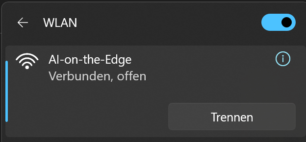
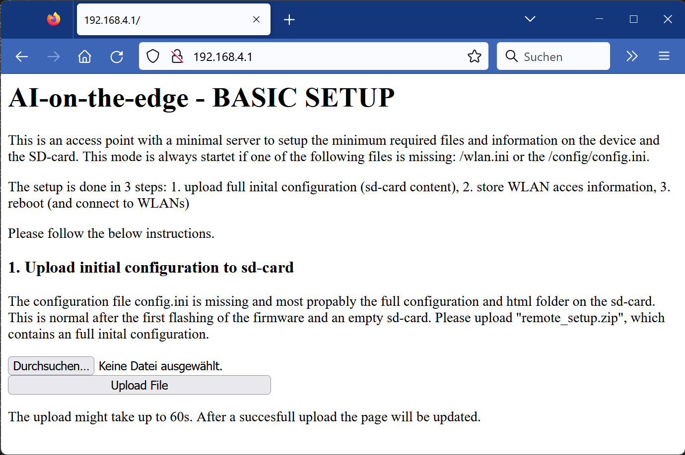
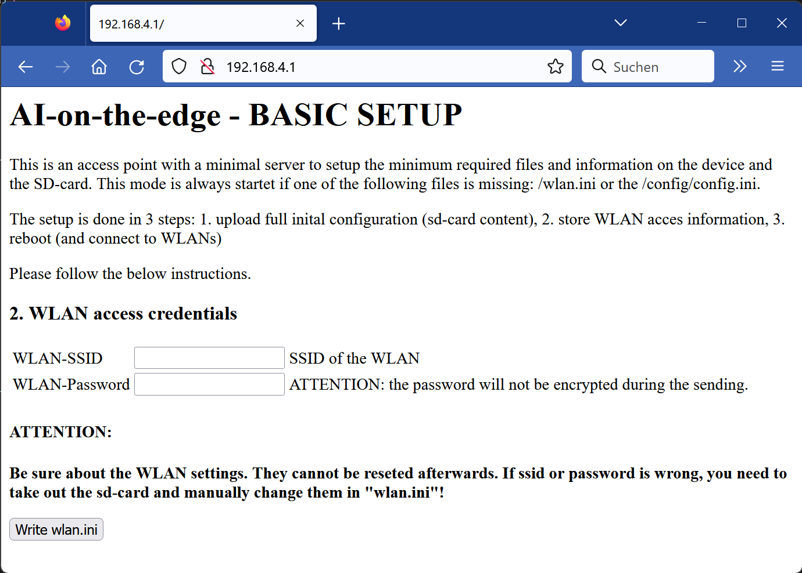
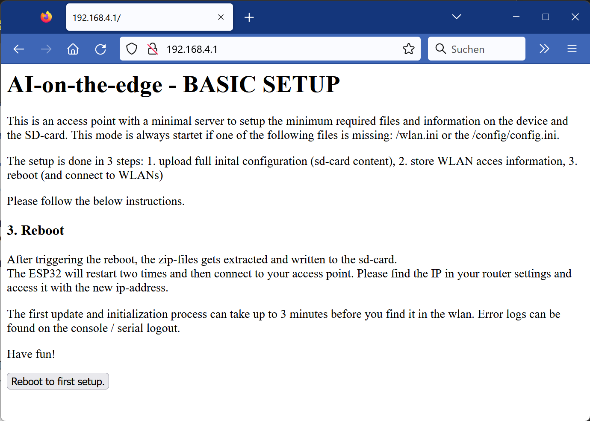

AI-on-the-edge-deviceWebinstaller and Console |
This page provides the Webinstaller and a live USB Console to your AI-on-the-edge-device.
For further information about AI-on-the-edge-device please go to https://github.com/jomjol/AI-on-the-edge-device.
Beside flashing the firmware you need a sd-card with configuration informations about the system and the wifi credentials.
There a two ways to make this settings:
Notes:
Installer and Console powered by ESP Web Tools
Before starting the flash process, download the necessary file. It is a zip file, containing the initial default configuration. You can identify it by the naming. It is named `AI-on-the-edge-device__remote-setup__*.zip`. Store this file locally as you will need it later.
Instructions see above.
During the first booting, the device detects that the wifi credentials as well as the configuration informations are missing.
Therefore a simple wifi access point is initiated and a simple internal web server is startet, so the device can be setup.
The naming of the wifi is "AI-on-the-edge" and you can access it without any password.

You connect to the server with the fixed ip: http://192.168.4.1

Use the `select file` and `upload` button to start the upload.
A warning will show up if you have choosen a possible wrong file (without default configuration).
Use the `select file` and `upload` button to start the upload.
A warning will show up if you have choosen a possible wrong file (without default configuration).
Be patient - the upload takes up to around 60s without response during this time!
After succesfull uploading, the page will be reloaded for the next step.

Here you can set your wifi credentials. Only basic settings can done here. If you need advanced features (fixed ip, ...), please use the manual setup.
Attention:
Finish the step by pushing `Write wlan.ini`

The final step is the reboot.
It will take up to 3 minutes. Afterwards you can find your device in the local network. Check you router for the IP. You can find it also in the USB Console output.